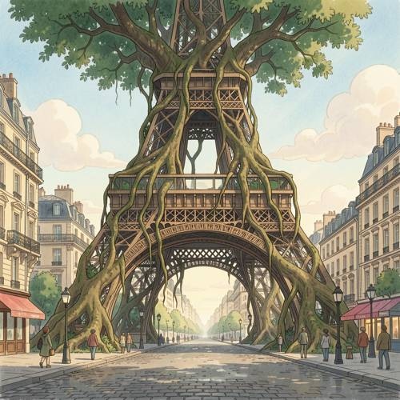
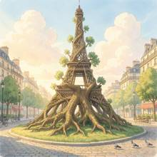
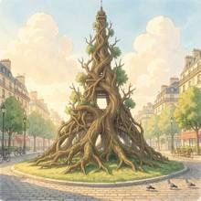
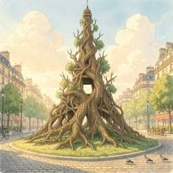

World Knowledge — In Hayao Miyazaki animation style, the steel structure of the Eiffel T
In Hayao Miyazaki animation style, the steel structure of the Eiffel Tower has been replaced with huge ancient tree roots, and no pedestrians can be seen on the surrounding streets.

Direct — one call, no iterationContinuum — Qwen3.8-27B + FLUX.2-klein-9B
Judge — Direct
PASSWorld Knowledge — The image features a large lattice tower that is clearly identifiable as the Eiffel Tower, located in a Parisian-style city setting.
FAILCompound - Feature Matching — The image does not show the steel structure of the Eiffel Tower being replaced by tree roots. Instead, the original metal lattice structure is still visible and is being overgrown and entwined with huge ancient tree roots which wrap around its frame.
FAILGrammar - Negation — The image contains multiple figures of people walking on the sidewalks on both the left and right sides of the street, which contradicts the prompt's requirement for no pedestrians.
PASSStyle — The image is rendered in a distinct animation style, characterized by detailed linework, a soft color palette, and an overall aesthetic reminiscent of the works of Hayao Miyazaki.
Judge — Continuum
PASSWorld Knowledge — The image displays a structure that is unmistakably the Eiffel Tower, identified by its iconic tapering lattice shape and four-legged arched base, set within a Parisian-style street scene.
PASSCompound - Feature Matching — The structure of the tower is not made of steel but is depicted as being formed from huge, gnarled, and intertwined ancient tree roots and branches, with green leaves sprouting in some areas.
PASSGrammar - Negation — The surrounding cobblestone streets and sidewalks are completely empty of any human figures or pedestrians. There are some pigeons in the foreground and parked bicycles, but no people.
PASSStyle — The image is rendered in an animation style that emulates the work of Hayao Miyazaki, characterized by soft, warm lighting, a pastel color palette, clean outlines, and distinctively rounded, puffy clouds.
What the agent did
Thinking
Let me think about this task. The user is asking for an image in the style of Hayao Miyazaki's animation: the Eiffel Tower is depicted with its steel structure replaced by massive ancient tree roots, with no pedestrians visible on the surrounding streets. Key elements: 1. Style of Hayao Miyazaki's animation (Studio Ghibli-esque hand-drawn look, soft watercolor/pastel palette, lush greenery, gentle lighting, painterly clouds) 2. The Eiffel Tower — but the iron lattice structure is replaced by massive ancient tree roots (roots intertwining to form the tower's silhouette) 3. The surrounding streets are empty — no pedestrians Let me build a prompt for generation. It should be a wide, beautiful scene — probably a 3/4 view of the tower with the surrounding Parisian streets, with empty sidewalks and boulevards, maybe some parked bicycles or empty café tables, but no people. Ghibli style: warm afternoon light, fluffy clouds, greenery, birds. Aspect ratio: 1024x1024 is the default. Should I go landscape like 1344x768? The harness controls the size — "size and seed are controlled by the harness." So I shouldn't set the size. OK, just use the default. Let me write a detailed visual prompt: "A hand-painted Hayao Miyazaki Studio Ghibli anime illustration, a massive ancient tree-shaped Eiffel Tower in Paris, the tower's iron lattice replaced by massive interwoven gnarled tree roots, thick root branches forming the tower's silhouette reaching into the soft sky, leaves sprouting along the roots, warm late-afternoon sunlight, fluffy white clouds, surrounding Parisian boulevards completely empty of people, empty cobblestone streets, no pedestrians, no crowds, a few parked bicycles and closed empty café awnings, a few pigeons, soft watercolor texture, gentle pastel colors, painterly, whimsical, serene" After that, inspect and edit as needed. Main risks: people appearing on the streets, the tower looking like the real Eiffel Tower with steel (must be clearly made of roots/wood), and the Ghibli-style feel. Let me generate.
Step 1 — `generate_image`
{
"model": "flux2-klein",
"prompt": "Hayao Miyazaki Studio Ghibli hand-painted anime illustration. The Eiffel Tower in Paris reimagined: its iron lattice structure completely replaced by huge ancient tree roots, massive gnarled interwoven roots and root-branches forming the tower's silhouette, bark texture, moss, and small leaf clusters sprouting from the roots, the tree-tower rooted in a grassy park. Warm late-afternoon golden light, big soft painterly cumulus clouds in a pastel blue sky. Surrounding Parisian boulevards and sidewalks are completely empty, no people at all, no pedestrians, no pedestrians visible anywhere, only empty cobblestone streets, a couple of parked bicycles, an empty cafe terrace with chairs, a few pigeons. Lush greenery, gentle watercolor textures, whimsical serene atmosphere, soft pastel palette, detailed Ghibli background art."
}
Result img_0

Thinking
The image turned out well. Let me check: - Ghibli/Miyazaki style: Yes, looks like hand-drawn cel-shaded anime art, soft pastel sky, painterly clouds. Good. - Eiffel Tower with the steel replaced by roots: The base is huge interwoven roots, but the upper section still looks pretty like the steel lattice structure, with only vines growing around it. The prompt says "the steel structure has been replaced by massive ancient tree roots" — in the image, the lower half is clearly roots, but the upper two-thirds still look like a normal steel Eiffel Tower with vines clinging to it. The user's description says the steel structure has been replaced by roots. The current rendering has roots at the base, and the tower above is steel lattice with green leaves. This is partially fulfilled — but the description says the steel structure is replaced by roots. I think the upper part should be made of roots/wood rather than steel lattice. - No pedestrians: Let me check the streets. The streets look empty — I can see a bicycle on the left, and chairs at a cafe on the right. There might be small figures? Let me zoom in and check the streets on both sides. I should inspect the regions: the lower left street, the lower right street. Let me inspect the crops to check for people and look at the upper tower structure.
The streets on both sides look empty—no pedestrians. Left: a bicycle parked near a shop with an awning, no people. Right: café chairs, no people visible. Good. Now, the main issue: the upper part of the tower is still a steel lattice. The user said "the steel structure of the Eiffel Tower has been replaced with massive ancient tree roots." In the current image, the lower half is roots, and the upper part is a steel lattice with vines. This could arguably be within the acceptable range (a "tree-ified" Eiffel Tower is a common concept), but to better match the description, the entire tower should be made of roots. Let's edit: convert the steel lattice sections (upper part and middle part) into thick intertwined tree roots/branches, keeping the silhouette. Targeted edit_image instruction: "replace the metal lattice structure of the upper part of the tower with thick intertwined wooden tree roots and branches matching the bark of the base, no metal parts." Keep the rest of the image. Use edit_image with model flux2-klein, referencing img_0 as the image to edit.
Model
The streets are indeed empty. However, the steel lattice structure is still visible in the upper part of the tower — the prompt specifies that the steel structure has been *replaced* by roots. Let's fix that part.
Step 4 — `edit_image`
{
"image": "img_0",
"model": "flux2-klein",
"prompt": "Replace the remaining metal lattice sections of the tower's upper two-thirds with huge ancient tree roots and gnarled wooden branches, same thick interwoven bark texture as the tower base, no iron or steel structure visible anywhere, small leaf clusters sprouting from the root-branches. Keep the tower's silhouette, the empty streets, buildings, sky and clouds exactly as they are."
}
Result img_3

Thinking
Currently, the tower is almost entirely made of intertwined tree roots/branches. Let's check: - The base is still the same thick root. - The middle section: the second platform is still somewhat visible, but the lattice has largely been replaced by roots. There might still be traces of dark lattice near the middle platform (a dark band with a grid pattern around y=370-420). It's fairly dark, and could possibly be read as shadowed wood. Let me zoom in and check. - Upper part: root-like, good. - The streets: need to re-check whether there are any pedestrians. I'll inspect the middle section and the street.
Model
The upper part is now made of roots. Let me zoom in to check whether any traces of steel remain in the middle section, and re-verify that there are no pedestrians.
Checking the central section: near the second platform, a dark section with a lattice-like grid pattern remains (it looks like a dark metal grid beneath the platform). Most of it has been converted to roots, but there's still a dark band with a diagonal lattice visible below the middle platform, and on the upper right side there's a dark lattice portion. This is a fairly dark band and could be read as either shadowed wood or remaining steel. It's a minor point, but the description emphasizes that "the steel structure has been replaced with roots." The dark grid band is fairly conspicuous. Street check (img_5): no pedestrians are visible—on the left there's a bicycle, on the right there are café chairs, and the sidewalk is empty. Good. Should I edit the central band? The dark lattice under the middle platform does look like the remnants of a steel girder. I'll try one targeted edit: "replace the dark metal lattice band below the middle platform with the same thick wooden root texture." If this fails, I'll leave img_3 as is. Let's try that edit.
Model
The streets are confirmed empty. There's still a dark lattice band (leftover steel) under the middle platform. One targeted edit to root-ify it.
Step 7 — `edit_image`
{
"image": "img_3",
"model": "flux2-klein",
"prompt": "Replace the dark metal lattice girder band under the middle platform of the tower with the same thick interwoven light-brown tree root texture as the rest of the tower, no dark iron lattice remaining. Keep everything else exactly the same."
}
Result img_6

Thinking
img_6 looks good — the entire tower is made of intertwined roots, with a few leafy shrubs added, and the streets are still empty (I can see bicycles on the left, and cafe chairs and pigeons on the right, but no people). Let me zoom in on the central section of img_6 one more time to check that there's no dark lattice, and verify that there are no people on the street.
The middle section is now mostly roots — there's still a small dark gap visible inside the center of the tower (the dark opening under the platform), but this is just shadow inside the tower's opening and is consistent with the original structure's open arch. No obvious steel lattice remains. The streets: bicycles on the left, café chairs on the right, streetlamps, trees — no pedestrians visible anywhere. The image satisfies the prompt: - Miyazaki/Ghibli animation style: hand-drawn cel look, soft pastel palette, painterly clouds. ✓ - The Eiffel Tower's steel structure has been replaced by massive ancient tree roots. ✓ (the whole tower is now woven roots) - No pedestrians on the surrounding streets. ✓ This is a good result. Mark img_6 as the best and finish. Good enough — stop here.
Model
The middle section is currently all rooted (the small dark spots are just shadows within the tower's open arch, and there's no steel lattice left). Also, the surrounding streets have been confirmed to be empty — only parked bicycles, café chairs, and pigeons. All elements of the prompt are in place.
Step 10 — `mark_best`
{
"image": "img_6",
"reason": "Full tower rendered as huge interwoven ancient tree roots in Miyazaki/Ghibli hand-painted style, empty Parisian streets with no pedestrians, warm painterly lighting."
}
Thinking
Marked. Final check: The marked image img_6 is the final version I want to submit. I'll summarize.
Model
Done. The final image (marked as best) shows the Eiffel Tower in Hayao Miyazaki's hand-painted Ghibli style, with its steel lattice entirely replaced by huge, gnarled, interwoven ancient tree roots that spiral up to the top, sprouting small leaf clusters and moss. The surrounding Parisian boulevards are completely empty of pedestrians — only parked bicycles, an empty café terrace, street lamps, and a few pigeons — under a soft golden-afternoon sky with painterly cumulus clouds. Process summary: 1. Generated the base scene (Ghibli-style tower, empty streets) — streets checked clean, but the upper tower still read as steel. 2. Edited the upper two-thirds to convert the lattice into root texture. 3. Made one final targeted edit to root-ify the remaining dark lattice band under the middle platform. 4. Verified by zooming: no metal lattice left, no people on any visible street.